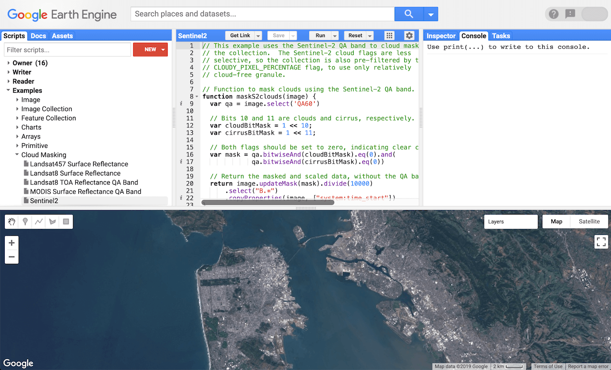

5 Google Earth Engine
5.1 Summary
This week’s lecture provided an introduction to Google Earth Engine (GEE) - content below will aim to summarise the most important things to note about this platform and discuss its many applications.
What is GEE? A cloud-based platform for analysing geospatial data and conducting large-scale remote sensing analysis using Javascript (code runs on both server (backend) and client (frontend) side).
Why should we use it? For one thing, it significantly decreases processing time and is openly available to anyone who wishes to use it. More specifically, though, the entire image collection does not need to be loaded repeatedly during looping.
Things to know when using GEE:
- Raster = image
- Collection = several images or polygons
- Image scale = pixel resolution (set by the output not input)
- GEE transforms all data into the Mercator projection (EPSG: 3857)
- Object = vector, raster, feature, string, number
- Geometry = point/line/polygon (no attributes)
- Feature = geometry (with attributes)
- Feature collection = several features
What can we do in GEE?
- Geometry operations (e.g. spatial operations) e.g., joins, filtering, zonal statistics, etc.
- Methods e.g., machine learning, classification, deep learning, etc.
- Applications/outputs e.g., online charts, scalable applications for geospatial data with GEE, etc.

5.2 Applications
As far as I’m aware, Amani et al. (2020) have summarised all possible applications of GEE within the realm of academic research in the most concise and comprehensive way. A total of 450 journal articles, spanning 150 journals, were analysed from January 2010 to May 2020 - you can see their findings below:
Considering how with each new year the news headlines are more and more populated with increasing volumes of natural disasters all across the world but especially in the most deprived regions, I found the application of GEE in disaster management most interesting and a positive development given the platform’s free-for-all access.
I found quite a few studies that utilised GEE to estimate projected damage following various natural disasters. An article by Kulinan et al. (2024) used the platform to address the limitations of existing techniques for assessing wildfire damage by proposing an integrated machine learning approach using Sentinel-2 imagery from GEE. By leveraging auto-generated training samples and object-based image analysis (OBIA), the study sought to automate and improve the accuracy of wildfire damage assessments. This research conducted in South Korea demonstrated the effectiveness of the proposed method in rapidly estimating burn severity and facilitating immediate mitigation actions during wildfires. Compared to traditional satellite imagery analysis methods, the approach utilising GEE offered greater efficiency, automation, and accuracy, reaffirming its significance in enhancing rapid disaster response and management efforts.
Moving from damage projections to recovery monitoring, a study by Ghaffarian, Rezaie Farhadabad, and Kerle (2020) assessed GEE’s suitability in tracking post-disaster recovery following Typhoon Haiyan’s impact on Leyte island, Philippines. By leveraging GEE’s remote sensing data and computing capabilities, the study developed a method to generate damage and recovery maps using Landsat satellite imagery. Results showed significant recovery over three years, emphasising GEE’s potential for monitoring large-scale recovery processes. However, limitations in analysing complex urban areas due to the lack of high-resolution data were noted. Nevertheless, even considering certain limitations, GEE offers relatively rapid and cost-effective tools for assessing recovery, surpassing traditional satellite imagery analysis methods.
5.3 Reflections
I found Google Earth Engine to be such a convenient and easy platform to use for data analysis - at least relative to SNAP and QGIS. Hearing that it uses Javascript was a tad daunting at first but once you’ve had experience with Python and R, it actually isn’t all that difficult to adapt to a new language (in this case, anyways) - it makes me curious as well as to where else outside of running analysis on GEE I could work with Javascript (definitely something to look into).
Another thing I found great about GEE is that it’s an open platform. Sure, it requires its user’s to have a basic level of coding knowledge but that’s not exactly a difficult thing to learn, especially considering how it provides its users with such a vast data access, making it an extremely cost-effective solution for researchers and organisations.